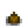
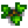
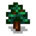
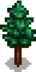
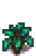
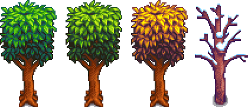

Ağaçlar
Bu sayfa meyve ağaçları ile ilgili değildir. Meyve ağaçları için Meyve Ağaçları sayfasına bakınız.
Meyve vermeyen ağaçların yaygın ve özel olmak üzere iki türü vardır. Yaygın ağaçlar (akçaağaç, meşe, çam ve maun) değerli doğal kaynaklardır ve birden fazla ürünün ana kaynağıdır (inşaat ve işçilik için odun, öz, akçaağaç şurubu, meşe reçinesi ve çam katranı). Özel ağaçların kendine has özellikleri vardır.
Yaygın Ağaçlar
Hasat
Olgunlaşmış bir ağaç, (aşama 5) tohum düşürmesi için sarsılabilir (bkz. Büyüme Döngüsü), üzerine Akıtaç yerleştirilebilir ya da Balta ile kesilebilir. Ağaçlar kesildiğinde, eğer uygunsa oyuncunun sağ ya da sol yanına devrilir ve devrildiği yönde odun ve tohum üretir. Yukarıdan veya aşağıdan kesildiğinde oyuncunun merkezin neresinde durduğuna göre düşme yönü tayin edilebilir. Ağaç bir duvarın yanındaysa duvara en yakın mesafeden kesilerek ulaşılabilir yönde devrilmesi sağlanabilir. Eğer ağaç su kenarında ise düşen nesneler suda kaybolabilir. Yüksek Çekim alanı geniş bir alana dağılmış ürünleri hızla toplamak için çok faydalıdır. Ürünler (güdükten olanlar dahil değil):[1]
 Odun (12-16). ekstra 4 adet odun Şans ve Toplayıcılık becerinize göre eklenir. Eğer Korucu uzmanlığına sahipseniz, düşen odun sayısı %25 daha fazladır (örneğin 15 ila 20 odun arası).
Odun (12-16). ekstra 4 adet odun Şans ve Toplayıcılık becerinize göre eklenir. Eğer Korucu uzmanlığına sahipseniz, düşen odun sayısı %25 daha fazladır (örneğin 15 ila 20 odun arası). Öz (5)
Öz (5) Akçaağaç Tohumu (0-2),
Akçaağaç Tohumu (0-2),  Meşe Palamudu (0-2), ya da
Meşe Palamudu (0-2), ya da  Çam Kozalağı (0-2). Ağacın türüne bağlıdır. Ağacın sarsılması ile düşen "gevşek" tohuma ek olarak düşer. Tohumlar, Toplayıcılık beceriniz en az 1 seviye ise düşer.
Çam Kozalağı (0-2). Ağacın türüne bağlıdır. Ağacın sarsılması ile düşen "gevşek" tohuma ek olarak düşer. Tohumlar, Toplayıcılık beceriniz en az 1 seviye ise düşer. Kereste. Eğer oyuncu Oduncu uzmanlığına sahipse düşer. Düşen kereste oranı rastgeledir: %50 ihtimalle 0, 25% ihtimalle 1 adet, 12,5% ihtimalle 2 adet, 6.25% ihtimalle 3 adet ... şeklinde devam eder (herhangi bir üst sınır olmadan).
Kereste. Eğer oyuncu Oduncu uzmanlığına sahipse düşer. Düşen kereste oranı rastgeledir: %50 ihtimalle 0, 25% ihtimalle 1 adet, 12,5% ihtimalle 2 adet, 6.25% ihtimalle 3 adet ... şeklinde devam eder (herhangi bir üst sınır olmadan).- 12 Toplayıcılık beceri puanı.
Eğer agaç üzerine Akıtaç yerleştirilmiş ise, kaldırılmadığı sürece kesilemez ve sarsılamaz.
Güdük, olgun bir ağaç kesildiğinde geriye kalan kök kalıntısıdır. Güdük, Balta ile kesildiğinde oluşan nesneler;[2]
- Odun (4-9)
- Tek oyunculu, en fazla 5, ekstra 4 adet odun Şans ve Toplayıcılık becerinize göre eklenir. Korucu uzmanlığına sahipseniz, toplamda 6 ila 11 odun düşebilir.
- Çok oyunculu, Düşebilen odun sayısı 4 adet olarak sınırlandırılmıştır. (Korucu uzmanlığında 5 adettir.)
- Öz (1)
- 1 Toplayıcılık beceri puanı.
Aşama 4 seviyesinde, ağaç fideleri Balta ile kesilebilir. Düşen nesneler:[3]
Aşama 2 ve 3 seviyelerinde, ağaç fideleri Balta, Çapa, Kazma, Tırpan, ya da Silah ile kesilebilir. Eğer Balta kullanılmıyorsa nesne düşmez.[4]
- Odun (1) Balta kullanılıyorsa düşme ihtimali vardır. Düşme yüzdesi, Güçlendirmeler dahil olmak üzere, oyuncunun Toplayıcılık seviyesine bağlıdır (Seviye 10 Toplayıcılıkta kesin nesne düşme ihtimali vardır).
Aşama 1 seviyesinde, ağaç tohumları Balta, Çapa ya da Kazma kullanılarak yerden çıkarılabilir. Sadece tohum elde edilir.
Büyüme Döngüsü
Her gün, %5 ihtimalle olgun bir ağaç "gevşek" tohum üretebilir. Bu tohum, oyuncu ağacı sarstığında düşer. Normalde, bu gevşek tohumlar ve ağaç türü eşleşir ancak, Güz mevsiminin son iki haftasında Akçaağaçlar, Akçaağaç Tohumu yerine Fındık düşürürler.[5] Ağaçlardan tohum düşürmek için oyuncu Toplayıcılık seviye 1 düzeyine ulaşmış ve bir gece geçmiş olmalıdır.
Bunlara ek olarak, çiftlikteki olgun ağaçlar (güdükler de dahil), her gece %15 ihtimalle çevrelerine bir tohum yaratabilirler.[6] Ana ağaçtan 3 kare alana kadar yeni bir ağaç yetişmesi için uygun bir alan varsa, 1 kare rastgele seçilir ve bu tohum "ekilmiş" olur ve aşama 1 ağaç tohumu yaratır. Özellikle boş bir alan olmalıdır. Yeni oluşacak ağaçlar yolları ya da ekinleri yok etmezler.
Ekilen ağaç tohumları olgunlaşmadan önce 4 aşamadan geçerler.
Ağaç tohumlarını sulamak gerekmez ve Meyve Ağaçları gibi çevresinin boş olmasına gerek yoktur. Çevresindeki alan döşenmiş olabilir, yeni ağaçlar su kenarlarında ya da başka yerlerde de oluşabilir. Ağaç tohumları ekildiği sürece büyürler.
Ağaç fidesi büyümesindeki tek sınırlama, iki olgun ağacın yan yana olamamasıdır: bitişik sekiz kareden herhangi birinde olgun bir ağaç varsa, bir fide 4. aşamayı asla geçemez.
Ağaç Gübresi ile ağaçlar her gece bir aşama atlarlar, aşama 4 ise 2 gün sürer. Toplamda gübrelenmiş bir tohum 5 günde tam olgunluğa ulaşır. Gübrelenmiş tohumlar ve fideler Kış mevsiminde bile büyüyebiliriler. Gübrelenmezse tohum ve fideler Kış mevsiminde büyümezler.
Gübre olmadan, fidelerin iki kat daha uzun zaman harcadığı aşama 4 hariç, her gece bir sonraki aşamaya geçme şansı %20'dir. Ağaçların büyüme süreleri önemli ölçüde değişse de, tohumdan olgunluğa kadar ortalama büyüme süresi 24 gündür. İstatistiksel olarak tohumların %90'ı 38 günde (kış hariç) ve %99'u 55 günde olgunluğa ulaşırlar.
Çiftliğin Dışında
Kömürözü Ormanı, Dağ, Demiryolu, Taş Ocağı, Otobüs Durağı ve Ormanönü kısımlarında bulunan ağaçlar kesilebilir, Akıtaç yerleştirilebilir ve sarsılabilir, ancak oyuncular Kasaba içinde bulunan ağaçlarla etkileşime giremezler.
Çiftliğin dışındaki ağaçlar, asla yayılma göstermezler. Bununla beraber, oyuncu işlenebilen alanlara tohum ekilebilir ve bu tohumlar standart büyüme aşamalarından geçerler.
Çiftlik dışında önceden var olan, kesilmiş ve güdükleri de temizlenmiş ağaçların, geçen gece başına %20 ihtimalle aşama 3 seviyesinde tekrar oluşma şansı vardır (Kış mevsimi de dahil). Ağaçlar tekrar oluştuktan sonra, normal bir şekilde büyüyerek olgun bir ağaca dönüşürler. Güdük kaldırılmazsa, ağaç tekrar büyümeyecektir.
Yıldırım Düşmesi
Yıldırım düştükten 3 ya da 4 gün sonra kömür üreten Meyve Ağaçlarının aksine, Yaygın Ağaçlar, yıldırım düşmesiyle tahrip olur ve geriye sadece güdük kısmı (ve belki öz ya da odun) kalır.
Akçaağaç
Akçaağaç,  Akçaağaç Tohumu ile yetiştirilebilir. Üzerine Akıtaç yerleştirildiğinde her 9 günde bir
Akçaağaç Tohumu ile yetiştirilebilir. Üzerine Akıtaç yerleştirildiğinde her 9 günde bir  Akçaağaç Pekmezi üretir (Büyük Akıtaç kullanılırsa 4 ila 5 gün sürer). Akçaağaçlar, Güz mevsiminin son 2 haftasında Fındık düşürebilirler.
Akçaağaç Pekmezi üretir (Büyük Akıtaç kullanılırsa 4 ila 5 gün sürer). Akçaağaçlar, Güz mevsiminin son 2 haftasında Fındık düşürebilirler.
Akçaağaç Şurubu, 3 çeşit yaygın ağaç şurubu arasında en kârlı olanıdır.
| 1. Aşama | 2. Aşama | 3. Aşama | 4. Aşama | 5. Aşama - Bahar, Yaz, Güz, Kış | güdük - Bahar, Yaz, Güz, Kış |
|---|---|---|---|---|---|
 |
 |
 |
Meşe Ağacı
Meşe Ağacı,  Meşe Palamudu ile yetiştirilebilir. Üzerine Akıtaç yerleştirildiğinde 7 ila 8 günde
Meşe Palamudu ile yetiştirilebilir. Üzerine Akıtaç yerleştirildiğinde 7 ila 8 günde  Meşe Reçinesi üretir (Büyük Akıtaç kullanılırsa 3 ila 4 gün sürer). Meşe ağacı
Meşe Reçinesi üretir (Büyük Akıtaç kullanılırsa 3 ila 4 gün sürer). Meşe ağacı
Çam Ağacı
Çam Ağacı,  Çam Kozalağı ile yetiştirilebilir. Üzerine Akıtaç yerleştirildiğinde 5 ila 6 günde bir
Çam Kozalağı ile yetiştirilebilir. Üzerine Akıtaç yerleştirildiğinde 5 ila 6 günde bir  Çam Katranı üretir (Büyük Akıtaç kullanılırsa 2 ila 3 gün sürer).
Çam Katranı üretir (Büyük Akıtaç kullanılırsa 2 ila 3 gün sürer).
| Aşama 1 | Aşama 2 | Aşama 3 | Aşama 4 | Aşama 5 - Bahar, Yaz, Güz, Kış | Güdük - Bahar, Yaz, Güz, Kış |
|---|---|---|---|---|---|
 |
 |
 |
Maun Ağacı
Maun ağacı  maun tohumunun olgunlaşmasıyla oluşan sıradan bir ağaçtır. Akıtaç ya da büyük akıtaç konulduğunda her gün
maun tohumunun olgunlaşmasıyla oluşan sıradan bir ağaçtır. Akıtaç ya da büyük akıtaç konulduğunda her gün  öz üretir.
öz üretir.
| Aşama 1 | Aşama 2 | Aşama 3 | Aşama 4 | Aşama 5 - Bahar, Yaz, Güz, Kış | Kütük - Bahar, Yaz, Güz, Kış |
|---|---|---|---|---|---|
 |
 |
Özel Ağaçlar
Özel ağaçların sıra dışı özellikleri ve ürünleri vardır.
Mantar Ağacı
Mantar Ağaçları çiftlikte nadir görülen bir ağaç türüdür. Güz mevsiminde, gün bitiminde, olgun bir yaygın ağacın (Akıtaç yerleştirilmemiş olmalı) ya da güdüğün Mantar Ağacına dönüşme ihtimali vardır. Ayrıca Mantar Ağacı Tohumu ile de yetiştirilebilir. Bu tohumlar ağaçlar kesildiğinde ya da sarsıldığında düşmez, sadece Bay Qi'nin Ceviz Odası'ndan alınabilir. Mantar Ağaçları diğer ağaç türleri gibi yayılabilirler ve kesildiklerinde Kırmızı ya da Mor Mantar düşürürüler. Üzerlerine Akıtaç yerleştirilebilir ve  Mantar,
Mantar,  Kırmızı Mantar, and
Kırmızı Mantar, and  Mor Mantar üretirler. Yaygın ağaçlar gibi, Yıldırım Düşmesi durumunda tahrip olurlar ve geriye sadece kütük kısmı (ve belki öz ya da odun) kalır. Sadece kütük kısmı kalmış ise, bir sonraki Bahar mevsiminde tekrar büyürler.
Mor Mantar üretirler. Yaygın ağaçlar gibi, Yıldırım Düşmesi durumunda tahrip olurlar ve geriye sadece kütük kısmı (ve belki öz ya da odun) kalır. Sadece kütük kısmı kalmış ise, bir sonraki Bahar mevsiminde tekrar büyürler.
| 1. Aşama | 2. Aşama | 3. Aşama | 4. Aşama | 5. Aşama | Güdük |
|---|---|---|---|---|---|

|
Palmiye Ağacı
Palmiye Ağaçları, Çöl'de ve Zencefil Adasında bulunur. Kesildiğinde veya sarsıldığında tohum düşürmezler ancak Hindistan cevizi düşürme ihtimalleri vardır. Üzerlerine Akıtaç yerleştirilemez.
| Aşama 1 | Aşama 2 | Aşama 3 - Çöl/ Ada | Kütük |
|---|---|---|---|
 
|
Referanslar
Geçmiş
- 1.1: Artık bir güdüğe dokunamazsınız.
- 1.3.27: Küçük ağaç kütüklerini kırmak artık +1 Toplayıcılık XP sağlıyor.
- 1.4: 2-3. aşama fidanların sulandığında tırpan sesi çıkarmasına neden olan hata giderildi. Gün içinde bir Toplayıcılık seviyesi yükselirse, ağaçların tohum bırakmasını ve hasat edildiğinde tohumların kaybolmasını engelleyen hata düzeltildi. Çiftliğin dışına ağaç tohumları dikmek artık o yerin sürülmesini gerektirmiyor. (Bu aynı zamanda Kışın Artifact Spots tarafından kazılmış, sürülemeyen alanlarda ekim yapılmasına da engel olur).
- 1.5: Maun ağacı tanıtıldı.
| Ağaçlar | |
|---|---|
| Ağaçlar | Akçaağaç • Çam Ağacı • Maun Ağacı • Meşe Ağacı • Palmiye Ağacı |
| Meyve Ağaçları | Elma Ağacı • Kayısı Ağacı • Kiraz Ağacı • Mango Ağacı • Muz Ağacı • Nar Ağacı • Portakal Ağacı • Şeftali Ağacı |
| Tohumlar | Akçaağaç Tohumu • Çam Kozalağı • Mantar Ağacı Tohumu • Maun Tohumu • Meşe Palamudu |
| Meyve | Elma • Kayısı • Kiraz • Mango • Muz • Nar • Portakal • Şeftali |
| Çeşitli | Büyük Güdük • Büyük Kütük • Çay Çalısı • Mantar Ağacı |